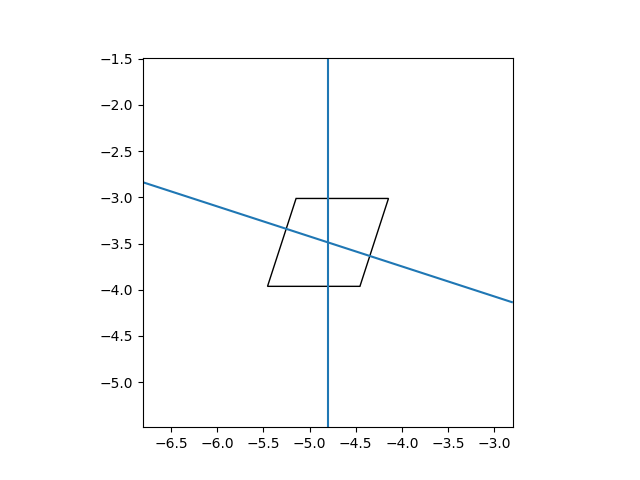
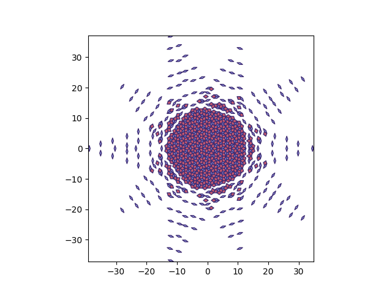

from collections import defaultdict, namedtuple, deque
from itertools import combinations
from math import isclose
import uuid
import matplotlib as mpl
import matplotlib.pyplot as plt
from matplotlib.collections import LineCollection
from matplotlib.collections import PolyCollection
from matplotlib.patches import Polygon
import numpy as npIntroduction
I created a Python package for creating tiling patterns using the multigrid method. This post walks through the code, which can be found at this GitHub repository.
The multigrid method takes several grids of lines and use a repeated formula at each intersection to create a shape. Each line has a number; it’s k-value. These are the inputs to the formula. A different input to the formula is used for each division of an intersection because the k-value changes as the division crosses a line. So, two lines intersecting will have four inputs while three lines will have six. The output of one formula determine a point’s location. The points together form one tile. Then, all the tiles together create the final image.
It’s important to realize there are two sets of coordinates. One set for the grids and their lines. Another set for the tiles and their points. These two coordinates do not line up. So an image of the lines laid on top of the tiles won’t look right.
The following resources were incredibly helpful.
Pentagrids and Penrose Tilings by Stacy Mowry and Shriya Shukla
Properly drawing a Penrose tiling using the pentagrid method
I recommend reading through them to get an idea of how the setup works.
The code mostly flows in a nice order. So I’m going to go straight through grid_tilings.py.
Imports
The imports show two sets: one to build the classes and the other for plotting.
Point Class
The ‘Point’ class contains the basic information for a point used for a tile. It takes in the k-values, determines the coordinates in the tiling space, and saves everything. These will be saved in a dictionary for use when graphing.
class Point:
"""
Point class containing location information.
Attributes:
k_values: Tuple of k value uniquely identifying a point
base_location: np.array() location in the tiling space
centered_location: np.array() location in the tiling space that
has been moved so the base_point is at (0, 0)
"""
def __init__(self, k_values, cos_list, sin_list, mid_point):
"""
Constructor for a Point.
Args:
k_values: Tuple of k value uniquely identifying a point
cos_list: cosine values of the Multigrid
sin_list: sin values of the Multigrid
mid_point: center of the tilings
"""
self.k_values = k_values
# Convert k_values in the Multigrid space to a point in the
# tiling space
self.base_location = np.array([0, 0], dtype=float)
for k, c, s in zip(k_values, cos_list, sin_list):
self.base_location += k * np.array([c, s])
self.centered_location = self.base_location - mid_point
def __str__(self):
return f'{self.k_values}'Line Class
The ‘Line’ class stores information for each line. The grids will be made up of these lines. This class uses the standard form of a line to allow both vertical and horizontal lines. There is a function to determine the intersection between itself and another line. There’s another function to draw the line, which is helpful when debugging. Finally, there’s an exception class for if two lines are equivalent. This can happen when two different grids end up overlapping exactly. For example, one grid going straight up and another going straight down with one unit difference. In these situations, the logic for determining the points will fail. So, it needs to be stopped by the exception.
class Line:
"""
Line class used to build up a Multigrid.
Follows the standard form a line.
a*x + b*y = c
This allows for both vertical and horizontal lines.
Attributes:
a: x value
b: y value
c: constant value, created by adding offset and k value
k: k value (optional)
grid: grid number (optional)
angles: angles of the x-axis
"""
def __init__(self, a, b, o, k=0, grid=None):
"""
Constructor for Line.
Arg:
a: x value
b: y value
c: constant value, created by adding offset and k value
o: k value (optional)
grid: grid number (optional)
"""
self.a = a
self.b = b
self.c = o + k
self.offset = o
self.k = k
self.grid = grid
# Determine the angle off horizontal
first_angle = np.arctan2(-a, b)
if first_angle < 0:
second_angle = first_angle + np.pi
else:
second_angle = first_angle - np.pi
# crossing counter-clockwise
# first angle is always k + 1
# second is alway k by construction
Angle = namedtuple('Angle', ['value', 'k', 'grid'])
self.angles = [Angle(first_angle, self.k + 1, grid),
Angle(second_angle, self.k, grid)]
def __str__(self):
return (f'a={self.a}, b={self.b}, offset={self.offset}, '
f'k={self.k}, grid={self.grid}')
def determine_intersection(self, other_line, decimals=7):
"""
Finds the intersection between this Line and another one.
Args:
other_line: different Line
decimals: controls the rounding for comparisons
Returns:
Tuple containing the intersection or None if parallel
Raises:
OverlappingLines: if the Lines are the same
"""
# denominator for formula for the intersection
# if this is zero then the lines are parallel or overlap
denom = (self.a * other_line.b) - (other_line.a * self.b)
if isclose(denom, 0, rel_tol=1e-5, abs_tol=1e-05):
# Determine if it's the same line by calculating if all the
# coefficients have the same proportion between the two
# lines
if isclose(other_line.a, 0, rel_tol=1e-5, abs_tol=1e-05):
if not isclose(self.a, 0, rel_tol=1e-5, abs_tol=1e-05):
# Different lines
return None
a_proportion = 0
else:
a_proportion = self.a / other_line.a
if isclose(other_line.b, 0, rel_tol=1e-5, abs_tol=1e-05):
if not isclose(self.b, 0, rel_tol=1e-5, abs_tol=1e-05):
# Different lines
return None
b_proportion = 0
else:
b_proportion = self.b / other_line.b
if a_proportion and b_proportion:
if not isclose(a_proportion, b_proportion):
return None
if isclose(other_line.c, 0, rel_tol=1e-5, abs_tol=1e-05):
if not isclose(self.c, 0, rel_tol=1e-5, abs_tol=1e-05):
# Different lines
return None
c_proportion = 0
else:
c_proportion = self.c / other_line.c
if a_proportion and c_proportion:
if not isclose(a_proportion, c_proportion,
rel_tol=1e-5, abs_tol=1e-05):
return None
if b_proportion and c_proportion:
if not isclose(b_proportion, c_proportion,
rel_tol=1e-5, abs_tol=1e-05):
return None
raise OverlappingLines(self, other_line)
else:
x = (other_line.b * self.c) - (self.b * other_line.c)
x = x / denom
y = (self.a * other_line.c) - (other_line.a * self.c)
y = y / denom
return (np.round(x, decimals), np.round(y, decimals))
def draw_line(self, ax):
"""
Draws the line.
Example:
l = Line(1, 1, 0)
fig, ax = plt.subplots()
l.draw_line(ax)
plt.show()
"""
graph_points = []
# Crosses x-axis
if self.b != 0:
graph_points.append((-5, (self.c - self.a*-5)/self.b))
graph_points.append((0, self.c/self.b))
graph_points.append((5, (self.c - self.a*5)/self.b))
# Crosses y-axis
if self.a != 0:
graph_points.append(((self.c - self.b*-5)/self.a, -5))
graph_points.append((self.c/self.a, 0))
graph_points.append(((self.c - self.b*5)/self.a, 5))
# Build out boundary
min_x = np.inf
max_x = -np.inf
min_y = np.inf
max_y = -np.inf
for i in graph_points:
if i[0] < min_x:
min_x = i[0]
if i[0] > max_x:
max_x = i[0]
if i[1] < min_y:
min_y = i[1]
if i[1] > max_y:
max_y = i[1]
# If the line is horizontal or vertical, set boundary to 5.
if min_x == max_x:
min_x = min_x - 5
max_x = max_x + 5
if min_y == max_y:
min_y = min_y - 5
max_y = max_y + 5
ax.axhline(0, color='gray', linestyle="--")
ax.axvline(0, color='gray', linestyle="--")
ax.add_collection(LineCollection([graph_points]))
ax.set_xlim(min_x, max_x)
ax.set_ylim(min_y, max_y)
ax.set_aspect('equal')
return ax
class OverlappingLines(Exception):
"""Exception for lines that are the same."""
def __init__(self, line_1, line_2,
msg="These two lines are the same line."):
self.line_1 = line_1
self.line_2 = line_2
self.msg = msg
super().__init__(self.msg)
def __str__(self):
return f'{self.msg}\n\t{self.line_1}\n\t{self.line_2}'


Edge Class
The Edge class is used to draw the tiles and determine which tiles are neighbors. There is an exception for if an edge is used by more than two tiles. This can happen when there’s a floating point issue.
class Edge:
"""
Class used for tile edges.
This doesn't relate to the Line class at all.
"""
def __init__(self, point_ids, tile_id):
"""
Constructor for Edge.
Args:
point_ids: Points for the ends of the edge
tile_id: starting tile_id
"""
self.points = point_ids
self.tile_ids = [tile_id]
def add_tile_id(self, tile_id):
"""
Adds a tile_id to the list of adjacent tiles
Raises:
OverusedEdge: if there are more than two tiles
"""
self.tile_ids.append(tile_id)
if len(self.tile_ids) > 2:
raise OverusedEdge(self)
def __str__(self):
msg = f'point_ids: {self.points}'
for t in self.tile_ids:
msg = msg + f'\n\t{t}'
return msg
class OverusedEdge(Exception):
"""
Exception for when an edge has more than two tiles one it.
Happens when the floating point fails on a point with multiple lines
"""
def __init__(self, edge, msg="This edge has more than two tiles."):
self.edge = edge
self.msg = msg
super().__init__(self.msg)
def __str__(self):
return f'{self.msg}\n\t{self.edge}'Tile Class
The Tile class contains all the information for one shape. It takes in the points and the intersection that creates the tile. The function compare_angles compares itself to another tile to see if they match. This function, along with tile_group, is used to color all the same tiles one color. Then draw_tile and draw_line_angles draw images.
class Tile:
"""
Class used for the Tile.
Attributes:
tile_points: points around the tile
intersection_points: points for the intersection that creates
the tile
intersection_lines: lines from the Multigrid that intersect on
the tile
tile_group: group number for coloring similar tiles
tile_id: unique id for each tile. Used for Edge class
connected: Bool for if the tile is connected to the base_point
through other tiles. Used to remove unconnected tiles.
interior_angles: angles inside the tile. Used determine similar
tiles and thus the tile_group.
"""
def __init__(self, tile_points, intersection_points, intersection_lines):
"""
Constructor for a Tile
Args:
tile_points: points around the tile
intersection_points: points for the intersection that
creates the tile
intersection_lines: lines from the Multigrid that intersect
on the tile
"""
self.tile_points = tile_points
self.intersection_points = intersection_points
self.intersection_lines = intersection_lines
self.tile_group = 0
self.tile_id = uuid.uuid4()
self.connected = False
# Determine the interior angles to compare tiles to see which
# ones have the same shape. Don't need to compare distances
# between angles because it's always 1 by construction.
self.interior_angles = []
for previous_point, tile_point, next_point in (
zip([self.tile_points[-1]] + self.tile_points[:-1],
self.tile_points,
self.tile_points[1:] + [self.tile_points[0]])):
point_location = tile_point.base_location
previous_point_location = previous_point.base_location
next_point_location = next_point.base_location
in_vector = point_location - previous_point_location
out_vector = next_point_location - point_location
angle = np.arctan2(in_vector[0] * out_vector[1]
- in_vector[1] * out_vector[0],
in_vector[0] * out_vector[0]
+ in_vector[1] * out_vector[1])
self.interior_angles.append(angle)
def compare_angles(self, other_polygon):
"""
Compare this tile to another one to see if they have the
same shape
"""
# Do they even have the same number of angles?
if len(self.interior_angles) != len(other_polygon.interior_angles):
return False
# Is the first angle even in the other set?
no_match = True
for a in self.interior_angles:
if isclose(a, other_polygon.interior_angles[0],
rel_tol=1e-5, abs_tol=1e-05):
no_match = False
if no_match:
return False
# Do they have all the same angles in same order?
angles_repeated = self.interior_angles + self.interior_angles
for a in np.arange(len(self.interior_angles)):
match = True
for b in np.arange(len(other_polygon.interior_angles)):
if not isclose(angles_repeated[a + b],
other_polygon.interior_angles[b],
rel_tol=1e-5, abs_tol=1e-05):
match = False
break
if match:
return True
return False
def draw_tile(self, ax):
"""
Draws the tile.
Example:
cos_list = [1, 0, -1, 0]
sin_list = [0, 1, 0, -1]
mid_point = np.array([0, 0], dtype=float)
points = [Point((1.0, 0.0, 0.0, 0.0),
cos_list,
sin_list,
mid_point),
Point((1.0, 1.0, 0.0, 0.0),
cos_list,
sin_list,
mid_point),
Point((0.0, 1.0, 0.0, 0.0),
cos_list,
sin_list,
mid_point),
Point((0.0, 0.0, 0.0, 0.0),
cos_list,
sin_list,
mid_point)]
lines = [Line(0, 1, .25, 0, 1),
Line(1, 0, .25, 0, 2)]
t = Tile(points, (.25, .25), lines)
fig, ax = plt.subplots()
t.draw_tile(ax)
plt.show()
"""
# Determine boundary box
min_x = np.inf
max_x = -np.inf
min_y = np.inf
max_y = -np.inf
line_base_point = self.intersection_points
tile_points = []
for tp in self.tile_points:
if tp.base_location[0] < min_x:
min_x = tp.base_location[0]
if tp.base_location[0] > max_x:
max_x = tp.base_location[0]
if tp.base_location[1] < min_y:
min_y = tp.base_location[1]
if tp.base_location[1] > max_y:
max_y = tp.base_location[1]
tile_points.append(tp.base_location.copy())
midpoint_x = 0
midpoint_y = 0
for p in tile_points:
midpoint_x += p[0]
midpoint_y += p[1]
midpoint_x = midpoint_x / len(tile_points)
midpoint_y = midpoint_y / len(tile_points)
for p in tile_points:
p[0] = p[0] - midpoint_x + line_base_point[0]
p[1] = p[1] - midpoint_y + line_base_point[1]
min_x -= 1
max_x += 1
min_y -= 1
max_y += 1
# Line stuff
line_base_point = self.intersection_points
line_min_x = self.intersection_points[0] - 2
line_max_x = self.intersection_points[0] + 2
line_min_y = self.intersection_points[1] - 2
line_max_y = self.intersection_points[1] + 2
boundary = [Line(1, 0, line_min_x, 0),
Line(1, 0, line_max_x, 0),
Line(0, 1, line_min_y, 0),
Line(0, 1, line_max_y, 0)]
draw_lines = []
for line in self.intersection_lines:
points = []
for b in boundary:
intersection = line.determine_intersection(b)
if (intersection
and intersection[0] >= (line_min_x - .5)
and intersection[0] <= (line_max_x + .5)
and intersection[1] >= (line_min_y - .5)
and intersection[1] <= (line_max_y + .5)):
points.append(intersection)
draw_lines.append(points)
ax.add_collection(LineCollection(draw_lines))
ax.add_patch(Polygon(tile_points, facecolor='w', edgecolor="k"))
ax.set_xlim(line_min_x, line_max_x)
ax.set_ylim(line_min_y, line_max_y)
ax.set_aspect('equal')
return ax
def draw_line_angles(self, ax):
"""Draws the lines and their angles."""
angles = [np.pi * x / 4 for x in range(-4, 4, 1)]
angles_color = ['black' for x in angles]
for line in self.intersection_lines:
angles.extend([line.angles[0].value, line.angles[1].value])
angles_color.extend(['red', 'red'])
draw_lines = []
text_location = []
for angle in angles:
draw_lines.append([(0, 0), (np.cos(angle), np.sin(angle))])
text_location.append([1.10 * np.cos(angle), 1.10 * np.sin(angle)])
ax.add_collection(LineCollection(draw_lines, colors=angles_color))
for tl, a in zip(text_location, angles):
ax.text(tl[0], tl[1], f'{a:.2f}')
ax.set_xlim(-1.5, 1.5)
ax.set_ylim(-1.5, 1.5)
ax.axis('off')
ax.set_aspect('equal')
return ax

Multigrid Class
The Multigrid class is the workhorse of this package. It takes in all the starting parameters and sets up the grid. The create_tiles function finds all the intersections, creates a tile for each one, then assigns the tile a color. The remove_unconnected_tiles function discards any tiles that don’t connect to the main central section. The draw_image and save_image function create the final images. The determine_base_K and determine_K functions are used to determine the k-values. The random_color and oklab functions are used to create colors. Finally, the draw_oklab, draw_offsets, draw_grids, draw_k, and draw_all_tiles functions are helpers to visualize the process.
class Multigrid:
"""
Multigrid class used create the grid of Lines to create the Tiles.
This is the main workhorse for the package.
Attributes:
seed: RNG seed
grid_count: The number of grids
grid_bounds: The number of lines in a grid
rotation: Amount to turn the multigrid
cos_list: cosine values of the Multigrid
sin_list: sin values of the Multigrid
base_point: Location to move the multigrid to
offsets: Movement from the center for each of the grids
colors: Colors for the tile groups
grids: list for all of the Lines in the Multigrid
grid_colors: list for a color for each grid
mid_point: center of the tilings
points: dictionary of the points for the Tiles
edges: dictionary of the edges for the Tiles
intersections: dictionary for the intersections between all the
Lines in the Multigrid
base_tiles: tile of unique tile shapes, used to determine Tile
coloring
tiles: dictionary of Tiles
"""
def __init__(self,
seed=None,
grid_count=None,
grid_bounds=[],
rotation=None,
base_point=(),
offsets=[],
colors=[]):
"""
Constructor for a Multigrid
Args:
seed: RNG seed
grid_count: The number of grids
grid_bounds: The number of lines in a grid
rotation: Amount to turn the multigrid
base_point: Location to move the multigrid to
offsets: Movement from the center for each of the grids
colors: Colors for the tile groups
"""
self.seed = seed
self.rng = np.random.default_rng(self.seed)
if not grid_count:
grid_count = self.rng.integers(low=5, high=20)
self.grid_count = grid_count
if not grid_bounds:
grid_bounds = self.rng.integers(low=2, high=10)
grid_bounds = [-grid_bounds, grid_bounds+1]
self.grid_bounds = grid_bounds
if rotation is None:
rotation = self.rng.uniform(low=0, high=(2 * np.pi / grid_count))
self.rotation = rotation
# Evenly space grids around the origin
self.cos_list = [np.cos(x * 2 * np.pi
/ self.grid_count + self.rotation)
for x in np.arange(self.grid_count)]
self.sin_list = [np.sin(x * 2 * np.pi
/ self.grid_count + self.rotation)
for x in np.arange(self.grid_count)]
if not offsets:
offsets = self.rng.uniform(size=grid_count)
if sum(offsets) != 0:
offsets = offsets / sum(offsets)
self.offsets = offsets
if colors:
self.colors = colors
else:
self.colors = []
if not base_point:
r = 25 * np.sqrt(self.rng.random())
theta = self.rng.random() * 2 * np.pi
base_point = np.array([r * np.cos(theta),
r * np.sin(theta), 0], dtype=float)
self.base_point = base_point
base_k_values = []
for c, s, o in zip(self.cos_list, self.sin_list, offsets):
base_k_values.append(
self.determine_base_K(self.base_point, c, s, o))
# Create the grids here
self.grids = []
for i, (s, c, o, bk) in enumerate(zip(self.sin_list, self.cos_list,
offsets, base_k_values)):
for k in np.arange(*grid_bounds):
self.grids.append(Line(c, s, o, bk + k, i))
self.grid_colors = [self.oklab(.75, .1 * c, .1 * s)
for c, s in zip(self.cos_list, self.sin_list)]
self.mid_point = np.array([0, 0], dtype=float)
for k, c, s in zip(base_k_values, self.cos_list, self.sin_list):
self.mid_point += k * np.array([c, s])
def update_edges(self, points, tile_id):
"""Only used to update edges when creating tiles"""
if points in self.edges:
self.edges[points].add_tile_id(tile_id)
else:
self.edges[points] = Edge(points, tile_id)
def create_tiles(self):
"""
Creates the tiles from the intersections of lines in the
Multigrid
"""
self.points = {}
self.edges = {}
# Use a set for each intersection so if three or more lines
# cross at the same point, there is one intersection and only
# those many lines listed, not an intersection for each pair
# of lines
self.intersections = defaultdict(set)
for pair in combinations(self.grids, 2):
l1 = pair[0]
l2 = pair[1]
# If they're the same grid, they don't intersect
if l1.grid == l2.grid:
continue
try:
intersection = l1.determine_intersection(l2)
# Sometime there's not an intersection for even number
# grids.
if intersection:
self.intersections[intersection].update([l1, l2])
# A bad combination of offsets with an even number of grids
# can produce lines that overlap (because two grids end up
# one unit apart, but in the exact opposite direction).
# If that happens, it should break.
except OverlappingLines as e:
print(e)
raise
self.base_tiles = []
self.tiles = {}
for (intersection_points,
intersection_lines) in self.intersections.items():
# We need to build a tile from each intersection. The points
# of a tile are in between the lines that make up an
# intersection. We'll loop through the lines in circle
# crossing over each line and then back over them as we
# go all the way around. So first order the lines by
# angle.
angles = []
for line in intersection_lines:
angles.extend(line.angles.copy())
angles.sort()
# Then, set up K values for the other lines. The k values
# that are for the lines get pulled from them.
ks = [self.determine_K(c, intersection_points[0],
s, intersection_points[1], o)
for c, s, o in zip(self.cos_list,
self.sin_list,
self.offsets)]
# Now spin around to ensure the ks are correct on the lines
# that intersect for the starting point (the left side of
# the circle).
for angle in angles:
ks[angle.grid] = angle.k
# Finally, loop through again with all the k values set
# correctly, update them as each line is crossed.
tile_points = []
for angle in angles:
ks[angle.grid] = angle.k
k_values = tuple(ks)
if k_values not in self.points:
self.points[k_values] = Point(k_values,
self.cos_list,
self.sin_list,
self.mid_point)
tile_points.append(self.points[k_values])
t = Tile(tile_points, intersection_points, intersection_lines)
# Create an Edge for each edge of a Tile
for t_current, t_next in zip(t.tile_points,
t.tile_points[1:]
+ [t.tile_points[0]]):
# Check left to right, then down to up to make sure the
# edges dictionary keys match
if t_current.base_location[1] < t_next.base_location[1]:
self.update_edges(points=(t_current.k_values,
t_next.k_values),
tile_id=t.tile_id)
elif t_next.base_location[1] < t_current.base_location[1]:
self.update_edges(points=(t_next.k_values,
t_current.k_values),
tile_id=t.tile_id)
elif t_current.base_location[0] < t_next.base_location[0]:
self.update_edges(points=(t_current.k_values,
t_next.k_values),
tile_id=t.tile_id)
else:
self.update_edges(points=(t_next.k_values,
t_current.k_values),
tile_id=t.tile_id)
# Assign a tile_group number for coloring later
bt_match = False
for bt in self.base_tiles:
if bt.compare_angles(t):
t.tile_group = bt.tile_group
bt_match = True
break
if not bt_match:
t.tile_group = len(self.base_tiles)
self.base_tiles.append(t)
self.tiles[t.tile_id] = t
# Assign colors to base tiles
if not self.colors:
for i in range(len(self.base_tiles) + 1):
self.colors.append(self.random_color())
def remove_unconnected_tiles(self):
"""
Removes tiles that aren't connected to the center.
Only needed if drawing all tiles and don't want any of the
unconnected ones.
"""
# Build out network of neighbors
neighbors = defaultdict(list)
for edge in self.edges.values():
if len(edge.tile_ids) == 2:
neighbors[edge.tile_ids[0]].append(edge.tile_ids[1])
neighbors[edge.tile_ids[1]].append(edge.tile_ids[0])
# Find a center-ish tile
for tile_id, tile in self.tiles.items():
tile_point = tile.tile_points[0]
tile_distance = tile_point.centered_location[0]**2
+ tile_point.centered_location[1]**2
if tile_distance < 1.5:
center_tile = tile
break
# Mark the connected tiles
center_tile.connected = True
connected_tiles = deque([center_tile])
while connected_tiles:
current_tile = connected_tiles.pop()
for neighbor in neighbors[current_tile.tile_id]:
neighbor_tile = self.tiles[neighbor]
if not neighbor_tile.connected:
neighbor_tile.connected = True
connected_tiles.append(neighbor_tile)
# Now, delete the not connected tiles
for k in list(self.tiles.keys()):
if not self.tiles[k].connected:
del self.tiles[k]
remove_edges = []
for edge in self.edges.values():
for t in edge.tile_ids.copy():
if t not in self.tiles:
edge.tile_ids.remove(t)
if not edge.tile_ids:
remove_edges.append(edge.points)
for edge in remove_edges:
del self.edges[edge]
def draw_image(self, ax):
"""
Draws the main image.
mg = Multigrid(grid_count=5,
grid_bounds=[-5, 5], rotation=0,
base_point = [0, 0],
offsets=[.2, .2, .2, .2, .2])
mg.create_tiles()
mg.remove_unconnected_tiles()
fig, ax = plt.subplots(figsize=figsize)
ax = self.draw_image(ax)
plt.tight_layout()
plt.show()
"""
# Find the closest distance between the center and all the edges
# that don't have two tiles
closest_distance = np.inf
for edge in self.edges.values():
if len(edge.tile_ids) == 1:
for p in edge.points:
p_distance = (self.points[p].centered_location[0] ** 2
+ self.points[p].centered_location[1] ** 2)
if p_distance < closest_distance:
closest_distance = p_distance
closest_distance = np.sqrt(closest_distance)
# Set this distance as the diagonal of a square for the image
# bounds.
image_bounds = closest_distance / np.sqrt(2)
# Set up all the tiles as polygons
polygons = []
polygon_colors = []
for t in self.tiles.values():
locations = []
for p in t.tile_points:
locations.append(p.centered_location)
polygons.append(locations)
polygon_colors.append(self.colors[t.tile_group])
polygon_collection = PolyCollection(polygons,
facecolor=polygon_colors,
edgecolor=self.colors[-1])
ax.add_collection(polygon_collection)
ax.set_aspect('equal')
ax.axis([-image_bounds, image_bounds, -image_bounds, image_bounds])
ax.axis('off')
def save_image(self, image_location, figsize=(5, 5), dpi=150):
"""
Save the main image
mg = Multigrid(grid_count=5,
grid_bounds=[-5, 5], rotation=0,
base_point = [0, 0],
offsets=[.2, .2, .2, .2, .2])
mg.create_tiles()
mg.remove_unconnected_tiles()
mg.save_image('output/graph.png')
"""
fig, ax = plt.subplots(figsize=figsize)
self.draw_image(ax)
plt.tight_layout(pad=0)
plt.savefig(image_location, dpi=dpi)
plt.close()
def determine_base_K(self, p, c, s, o):
"""Set the k values if there's a base_point"""
# If it's on a line, lower it to the origin
if isclose(((c * p[0] + s * p[1]) % 1), o,
rel_tol=1e-5, abs_tol=1e-05):
p_distance = np.sqrt(p[0]**2 + p[1]**2)
if p_distance:
p_normal_origin = [-p_ / p_distance * .5 for p_ in p]
p = [p + pno for p, pno in zip(p, p_normal_origin)]
else:
return 0
base_k = self.determine_K(c, p[0], s, p[1], o)
return base_k
def determine_K(self, c, x, s, y, o):
"""Formula for the k values"""
return np.ceil(c * x + s * y - o)
def random_color(self):
"""Draws a random color from oklab"""
converts_rgb = False
while not converts_rgb:
L = self.rng.uniform(0, 1)
a = self.rng.uniform(-.3, .3)
b = self.rng.uniform(-.3, .3)
rgb = self.oklab(L, a, b)
if ((0 <= rgb[0] and rgb[0] <= 1)
and (0 <= rgb[1] and rgb[1] <= 1)
and (0 <= rgb[2] and rgb[2] <= 1)):
converts_rgb = True
return rgb
def oklab(self, L, a, b):
"""Converts oklab to rgb"""
new_l = L + 0.3963377774 * a + 0.2158037573 * b
new_m = L - 0.1055613458 * a - 0.0638541728 * b
new_s = L - 0.0894841775 * a - 1.2914855480 * b
new_l = new_l * new_l * new_l
new_m = new_m * new_m * new_m
new_s = new_s * new_s * new_s
rgb = [4.0767416621 * new_l
- 3.3077115913 * new_m
+ 0.2309699292 * new_s,
-1.2684380046 * new_l
+ 2.6097574011 * new_m
- 0.3413193965 * new_s,
-0.0041960863 * new_l
- 0.7034186147 * new_m
+ 1.7076147010 * new_s]
# transfer function
rgb_correct = []
for value in rgb:
if value <= .0031308:
value = 12.92 * value
else:
value = (1.055 * np.power(value, (1 / 2.4))) - 0.055
rgb_correct.append(value)
return rgb_correct
def draw_oklab(self, L):
"""Draws a slice of oklab colorspace"""
A, B = np.meshgrid(np.arange(-.3, .3, .001), np.arange(-.3, .3, .001))
r = np.zeros_like(A)
g = np.zeros_like(A)
b = np.zeros_like(A)
a = np.zeros_like(A)
for i in range(len(r)):
for j in range(len(r[0])):
rgb = self.oklab(L, A[i, j], B[i, j])
if ((0 <= rgb[0] and rgb[0] <= 1)
and (0 <= rgb[1] and rgb[1] <= 1)
and (0 <= rgb[2] and rgb[2] <= 1)):
r[i, j] = rgb[0]
g[i, j] = rgb[1]
b[i, j] = rgb[2]
a[i, j] = 1
c = np.dstack([r, g, b, a])
plt.imshow(c, interpolation='nearest', origin="lower")
plt.xlabel('a')
plt.xticks(np.linspace(0, len(c), 7),
labels=np.round(np.linspace(-.3, .3, 7), 2))
plt.ylabel('b')
plt.yticks(np.linspace(0, len(c), 7),
labels=np.round(np.linspace(-.3, .3, 7), 2))
plt.title(f"L = {L}")
plt.show()
def draw_offsets(self, ax):
"""Draws the offsets"""
x = [x * o + self.base_point[0] for x, o in
zip(self.cos_list, self.offsets)]
y = [y * o + self.base_point[1] for y, o in
zip(self.sin_list, self.offsets)]
for x_point, y_point in zip(x, y):
ax.annotate("", xytext=self.base_point, xy=(x_point, y_point),
arrowprops=dict(arrowstyle="->"))
ax.scatter(self.base_point[0], self.base_point[1])
ax.scatter(x, y)
ax.set_aspect('equal', 'box')
return ax
def draw_grids(self, ax):
"""Draws the grids"""
min_x = np.inf
max_x = -np.inf
min_y = np.inf
max_y = -np.inf
for i in self.intersections.keys():
if i[0] < min_x:
min_x = i[0]
if i[0] > max_x:
max_x = i[0]
if i[1] < min_y:
min_y = i[1]
if i[1] > max_y:
max_y = i[1]
min_x -= 1
max_x += 1
min_y -= 1
max_y += 1
boundary = [Line(1, 0, min_x, 0), Line(1, 0, max_x, 0),
Line(0, 1, min_y, 0), Line(0, 1, max_y, 0)]
draw_lines = []
draw_color = []
for line in self.grids:
points = []
for b in boundary:
intersection = line.determine_intersection(b)
if (intersection
and intersection[0] >= (min_x - .5)
and intersection[0] <= (max_x + .5)
and intersection[1] >= (min_y - .5)
and intersection[1] <= (max_y + .5)):
points.append(intersection)
draw_lines.append(points)
draw_color.append(line.grid)
colors = [self.grid_colors[g] for g in draw_color]
ax.add_collection(LineCollection(draw_lines, colors=colors))
ax.set_xlim(min_x, max_x)
ax.set_ylim(min_y, max_y)
ax.set_aspect('equal')
return ax
def draw_k(self, ax, this_grid):
"""Draws the k values for one grid"""
these_lines = [line for line in self.grids if line.grid == this_grid]
this_cos = self.cos_list[this_grid]
this_sin = self.sin_list[this_grid]
this_offset = self.offsets[this_grid]
min_x = np.floor(self.base_point[0] - self.grid_count - 1)
max_x = np.ceil(self.base_point[0] + self.grid_count + 1)
min_y = np.floor(self.base_point[1] - self.grid_count - 1)
max_y = np.ceil(self.base_point[1] + self.grid_count + 1)
boundary = [Line(1, 0, min_x, 0), Line(1, 0, max_x, 0),
Line(0, 1, min_y, 0), Line(0, 1, max_y, 0)]
draw_lines = []
draw_color = []
for line in these_lines:
points = []
for b in boundary:
intersection = line.determine_intersection(b)
if (intersection
and intersection[0] >= (min_x - .5)
and intersection[0] <= (max_x + .5)
and intersection[1] >= (min_y - .5)
and intersection[1] <= (max_y + .5)):
points.append(intersection)
draw_lines.append(points)
draw_color.append(line.grid)
points_x = [(this_cos * (x - self.base_point[0] + .5)
+ self.base_point[0])
for x in np.arange(min_x, max_x)]
points_y = [(this_sin * (y - self.base_point[1] + .5)
+ self.base_point[1])
for y in np.arange(min_y, max_y)]
points_label = [self.determine_K(this_cos, x, this_sin, y, this_offset)
for x, y in zip(points_x, points_y)]
X, Y = np.meshgrid(np.arange(min_x, max_x, .1),
np.arange(min_y, max_y, .1))
Z = np.zeros(X.shape)
for i in range(X.shape[0]):
for j in range(X.shape[1]):
Z[i, j] = self.determine_K(this_cos, X[i, j],
this_sin, Y[i, j],
this_offset)
colors = [self.grid_colors[g] for g in draw_color]
cmap = mpl.cm.viridis
bounds = np.unique(Z)
norm = mpl.colors.BoundaryNorm(bounds, cmap.N)
ax.pcolor(X, Y, Z, norm=norm, cmap=cmap)
ax.add_collection(LineCollection(draw_lines, colors=colors))
for x, y, l in zip(points_x, points_y, points_label):
ax.text(x, y, f'{l:.0f}')
ax.set_xlim(min_x, max_x)
ax.set_ylim(min_y, max_y)
ax.set_aspect('equal')
return ax
def draw_all_tiles(self, ax):
"""Draws all the tiles"""
min_x = np.inf
max_x = -np.inf
min_y = np.inf
max_y = -np.inf
polygons = []
polygon_colors = []
for t in self.tiles.values():
locations = []
for p in t.tile_points:
locations.append(p.base_location)
if min_x > p.base_location[0]:
min_x = p.base_location[0]
if max_x < p.base_location[0]:
max_x = p.base_location[0]
if min_y > p.base_location[1]:
min_y = p.base_location[1]
if max_y < p.base_location[1]:
max_y = p.base_location[1]
polygons.append(locations)
polygon_colors.append(self.colors[t.tile_group])
polygon_collection = PolyCollection(polygons,
facecolor=polygon_colors,
edgecolor=self.colors[-1])
ax.add_collection(polygon_collection)
ax.set_aspect('equal')
ax.set_xlim(min_x, max_x)
ax.set_ylim(min_y, max_y)




Example
import grid_tilings
import matplotlib.pyplot as plt
mg = grid_tilings.Multigrid(seed=0,
grid_count=5,
grid_bounds=[-5, 5],
rotation=0,
base_point = [0, 0],
offsets=[.2, .2, .2, .2, .2])
mg.create_tiles()
fig, ax = plt.subplots(figsize=(5, 5))
ax = mg.draw_image(ax)
plt.tight_layout()
plt.show()